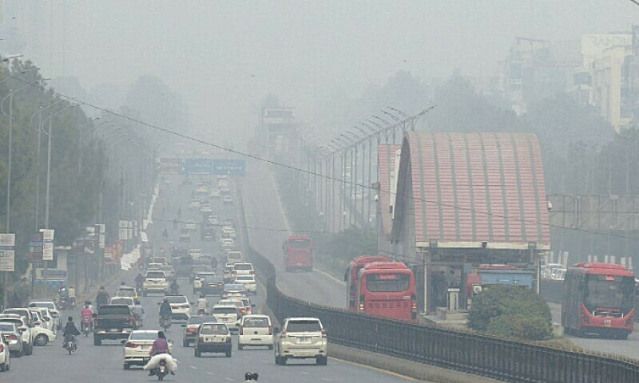
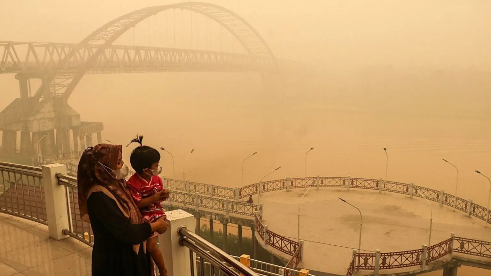
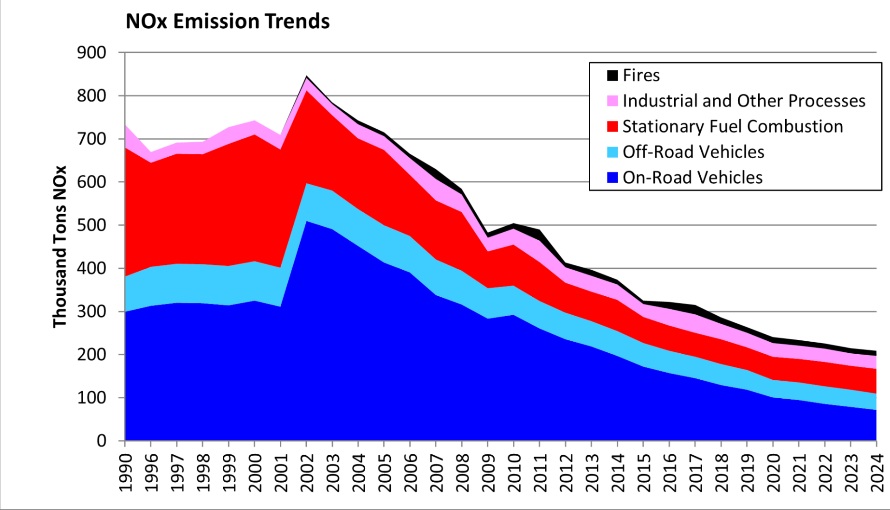
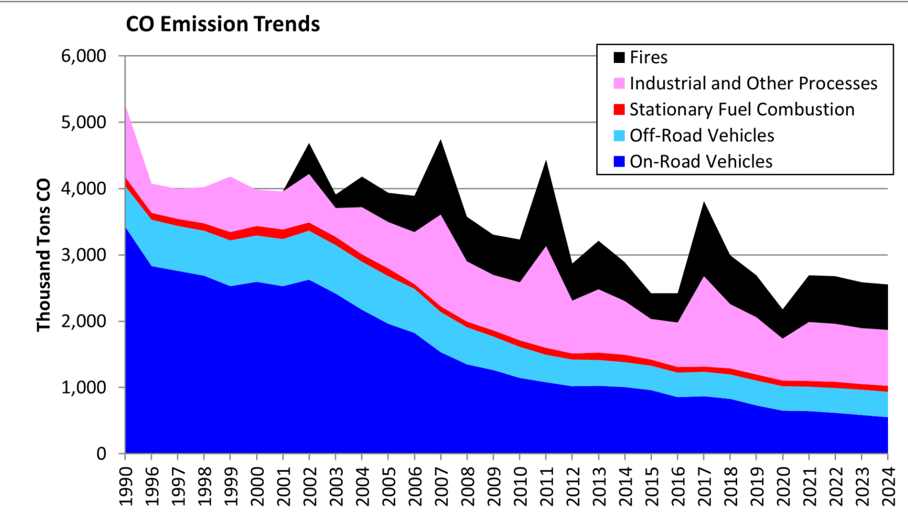

Air pollution and the cities we depend on
Dirty air strains everything
When air turns dangerous, the effects reach far beyond individual health. Clinics fill at the same moment, flights and roads slow down, workers stay home, and city governments divert money into emergency response. The effects below show how quickly a single pollution event, such as the 2015 Indonesia forest fires, becomes a problem for an entire city.
-
~500,000sickened in six provinces, Indonesia 2015
Pollution events send people to clinics all at once. In 2015 during peak pollution levels in Indonesia due to slash and burn fires, thousands of infants needed intensive care for respiratory illness. However, with hospitals overwhelmed mothers struggled to find treatment for their children.
-
<800 mvisibility in two Sumatran cities, 2015
Thick haze cuts visibility and disrupts travel. Thousands of air travelers lost time and money.
-
6.5% of GDP~$22 billion a year, Pakistan
In Indonesia, peatland smoke accounts for about 8.9 million lost workdays in an average year.
-
~100Mpeople breathing air ~10× WHO limits, Pakistan
When pollution peaks, daily life can stall. Economic and social activity across Punjab and Khyber Pakhtunkhwa came to a standstill.
Islamabad: announcements aren’t enough
In November 2024, Islamabad’s air quality leveled just below hazardous sparking massive concerns for health across the city. Officials responded with promises of fines, legal action and emissions checks. Yet, a national assessment a year later found the problem to be persistent, with transportion being the leading source in Islamabad and Rawalpindi for pollution. When it comes to sustainable air practices for cities, lasting change requires developements in city infrastructure and increased enforcement against unsustainable practices such as unregulated vehicle emissions. Solutions vary across each city, but the most effective methodologies are centered around limiting emissions at the source. Without consistent testing for vehicle emission and enforcement, the quality of air in Islamabad is likely to worsen.

[ Islamabad smog ]Islamabad, ahead of the announced crackdown.
Average life expectancy cut by pollution.
Premature deaths linked to polluted air.
Kalimantan and Sumatra: smoke across borders
A peatland is a wetland with an accumulated layer of organic peat soil. However, peatlands are often drained, dried, and burned to make room for agriculture and commercial expansion. Due to the peatland's organic material being carbon dense, its burning releases an incredible amount of emissions into the atmosphere. Additionally, once peat is drained it ignites easily. This combined with the dry season caused yearly by El Niño can often result in extensive fires that spiral beyond traditional peatland burning. The excess smoke settles over cities on both islands, killing an estimated 36,000 people in an average year. Most of Indonesia’s peatland fires burn on Sumatra and Kalimantan. However, the spread of the smoke is not limited to borders which often drifts into Malaysia and Singapore affecting communities far beyond the city.

[ Peatland haze ]About 33,100 adults and 2,900 infants, on average.
Severe childhood asthma cases, on average.
Lost to illness from peatland fire smoke.
People sickened across six provinces.
Sustainable air practices
Georgia’s emissions show both sides of the story. Between 1990 and 2024, NOx fell by roughly 70% and CO by roughly half, largely because on-road vehicles became cleaner. Fires have not followed that trend. They remain a large, persistent source and made up roughly a quarter of the state’s CO in 2024.


Georgia emissions by source category, 1990–2024. Source: Georgia Environmental Protection Division, 2024 Air Quality Report.
-
Manage peatland without drainage so it stops being fire-prone. Fire is a major CO source in Georgia as well.
-
Transport leads in Islamabad. Reliable public transit, walkable streets and cleaner kilns and vehicles tackle the largest sources.
-
Expand air quality monitoring so policies can be tested against real data.
-
Smoke crosses city and national lines, so monitoring and response must be shared.